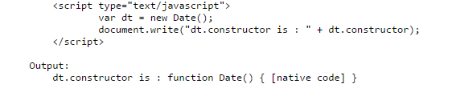
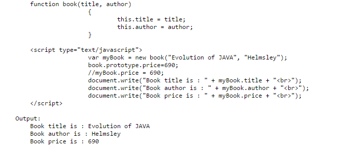

JAVASCRIPT
LET
The let statement declare a block scope variable, alternatively introducing it to a value.
SYNTAX
let var1 [= value1] [, var2 [= value2]] [, ..., varN [= valueN]];
- var1, var2, … , varN
- value1, value2, … , valueN
- Description
Variable name. It can be any legitimate identifier.
Introductory estimation of the variable. It can be any legitimate expression.
let permits you to declare variables that are constrained in scope to the block, statement, or expression on which it is utilized. This is not at all like the var keyword, which characterizes a variable universally, or locally to an entire function paying little attention to block scope
SCOPING RULES
Variables declared by let have as their scope the block in which they are characterized, and additionally in any contained sub-blocks . let works particularly like var. The principle distinction is that the extent of a var variable is the whole encasing function.

// to achieve the same effect with 'var'
// you've to create a different context
// using a closure to preserve the value

The case above fills in as planned in light of the fact that the five examples of the (anonymous) inner function allude to five distinct cases of the variable i. Take note of that it doesn't act as planned on the off chance that you supplant let with var, since the greater part of the inward capacities would then give back a similar last estimation of i: 6. Likewise, we can keep the scope around the loop cleaner by moving the code that makes the new components into the extent of each loop.
At the top level of programs and functions, let, not at all like var, does not make a property on the global object. For instance:

This technique just gives "static" private state - in the above case, all occurrences of SomeConstructor will have the same privateScope.
Temporal dead zone with let
Redeclaring a similar variable inside a similar function or block scope raises a SyntaxError.

In ECMAScript 2015, let will raise the variable to the highest point of the block. Notwithstanding, referencing the variable in the block before the variable assertion brings about a ReferenceError. The variable is in a "temporal dead zone" from the beginning of the block until the declaration is prepared.

You may experience errors in switch statements on the grounds that there is just a single basic block.

Utilizing let with a variable name that is the same as a parameter goes to a function will bring about an error inside a for loop.
CONS
SYNTAX
EXAMPLES:
VAR
SYNTAX
DECLARATION
INITIALIZATION OF MANY VARIABLES
IMPLICIT GLOBALS AND OUTER FUNCTION SCOPE
EXAMPLE
BOOLEAN
PARAMETERS
BOOLEAN INSTANCES
PROPERTIES
METHODS
NUMBER
SYNTAX
PARAMETERS
STRING
SYNTAX
PARAMETERS
FUNCTIONS
PROPERTIES OF OBJECTS
OBJECTS
PROPERTIES OF OBJECTS
ARRAYS
An Array object is an JavaScript global object which is used in the construction of an arrays. It is a high-level, list-like objects.
The syntax for creating an array object is: new Array(element0, element1[, ...[, elementN]]) | new Array(arrayLength)
PROPERTIES OF ARRAYS
- Array.length
- get Array[@@species]
- Array.prototype
This property which the Array constructor's length property whose value is 1.
This property which the constructor function that is used to create derived objects.
This property which allows the addition of properties to all array objects.
METHODS
- Array.from()
- Array.isArray()
- Array.of()
This method creates a new Array instance from an array-like or iterable object.
This method returns true if a variable is an array, if not false.
This method creates a new Array instance with a variable number of arguments, regardless of number or type of the arguments.
ARRAY INSTANCES
This are the arrays which inherits from the Array.prototype.
- Array.prototype.constructor
- Array.prototype.length
- Array.prototype[@@unscopables]
This property specifies the function that creates an object's prototype.
This property reflects the number of elements in an array.
This property is a symbol containing property names to exclude from a with binding scope.
ARRAYS METHODS
MUTATOR METHODS
- Array.prototype.copyWithin()
- Array.prototype.fill()
- Array.prototype.pop()
- Array.prototype.push()
- Array.prototype.reverse()
- Array.prototype.shift()
- Array.prototype.sort()
- Array.prototype.splice()
- Array.prototype.unshift()
This method copies a sequence of array elements within the array.
This method fills all the elements of an array from a start index to an end index with a static value.
This method removes the last element from an array and returns that element.
This method adds one or more elements to the end of an array and returns the new length of the array.
This method reverses the order of the elements of an array in place — the first becomes the last, and the last becomes the first.
This method removes the first element from an array and returns that element.
This method sorts the elements of an array in place and returns the array.
This method adds and/or removes elements from an array.
This method adds one or more elements to the front of an array and returns the new length of the array.
ACCESSOR METHODS
- Array.prototype.concat()
- Array.prototype.includes()
- Array.prototype.indexOf()
- Array.prototype.join()
- Array.prototype.lastIndexOf()
- Array.prototype.slice()
- Array.prototype.toSource()
- Array.prototype.toString()
- Array.prototype.toLocaleString()
This method returns a new array comprised of this array joined with other array(s) and/or value(s).
This method determines whether an array contains a certain element, returning true or false as appropriate.
This method returns the first (least) index of an element within the array equal to the specified value, or -1 if none is found.
This method joins all elements of an array into a string.
This method returns the last (greatest) index of an element within the array equal to the specified value, or -1 if none is found.
This method extracts a section of an array and returns a new array.
This method returns an array literal representing the specified array; you can use this value to create a new array. Overrides the Object.prototype.toSource() method.
This method returns a string representing the array and its elements. Overrides the Object.prototype.toString() method.
This method returns a localized string representing the array and its elements. Overrides the Object.prototype.toLocaleString() method.
ITERATOR METHODS
- Array.prototype.entries()
- Array.prototype.every()
- Array.prototype.filter()
- Array.prototype.find()
- Array.prototype.findIndex()
- Array.prototype.forEach()
- Array.prototype.keys()
- Array.prototype.map()
- Array.prototype.reduce()
- Array.prototype.reduceRight()
- Array.prototype.some()
- Array.prototype.values()
- Array.prototype[@@iterator]()
This method returns a new Array Iterator object that contains the key/value pairs for each index in the array.
This method returns true if every element in this array satisfies the provided testing function.
This method creates a new array with all of the elements of this array for which the provided filtering function returns true.
This method returns the found value in the array, if an element in the array satisfies the provided testing function or undefined if not found.
This method returns the found index in the array, if an element in the array satisfies the provided testing function or -1 if not found.
This method calls a function for each element in the array.
This method returns a new Array Iterator that contains the keys for each index in the array.
This method creates a new array with the results of calling a provided function on every element in this array.
This method applies a function against an accumulator and each value of the array (from left-to-right) as to reduce it to a single value.
This method applies a function against an accumulator and each value of the array (from right-to-left) as to reduce it to a single value.
This method returns true if at least one element in this array satisfies the provided testing function.
This method returns a new Array Iterator object that contains the values for each index in the array.
This method returns a new Array Iterator object that contains the values for each index in the array.
DATE(OBJECT)
SYNTAX
PARAMETERS
DATE(CONSTRUCTOR)
Composed of two Properties: Constructor and Prototype
CONSTRUCTORS
Specifies the function that creates an object's prototype. Javascript date constructor property returns a reference to the array function that created the instance's prototype.
SYNTAX: date.constructor
Example:
PROTOTYPE
The prototype property allows you to add properties and methods to an object. The prototype property allows you to add properties and methods to any object (Number, Boolean, String, Date, etc.).
Syntax: object.prototype.name = value
Example:
DATE OBJECTS
| METHODS | VALUE RANGE | DESCRIPTION |
|---|---|---|
| dateObj.getDate() | 1-31 | Date within the month |
| dateobj.setDate() | ||
| dateObj. getDay() | 0-6 | Day of the Week |
| dateObj. setDay() | ||
| dateObj. getFullYear() | 1970-... | Get the four digit year (yyyy). |
| dateObj. setFullYear() | ||
| dateObj. getHours() | 0-23 | dateObj. setHours() |
| dateObj. getMilliseconds() | 0-999 | Milliseconds since the previous full second(NN4+,Mozl+,Ie3+) |
| dateObj. setMilliseconds() | ||
| dateObj. getMonth() | 0-11 | Month within the year(January=0) |
| dateObj.getSeconds() | 0-59 | Second within the specified minute |
| dateObj. getMinutes() | 0-59 | Minute of the specified Hour |
| dateObj. setMinutes() | ||
| dateObj.getTime() | 0-… | Milliseconds since 1/1/70 00:00:00 GMT |
MATH
PARAMETERS
ERRORS
ERROR TYPES
linnemann et al. let-JavaScript. (April 7, 2017) Retrieved from: https://developer.mozilla.org/en/docs/Web/JavaScript/Reference/Statements/let
Mills, C.D., (2017, March 15). “What is JavaScript, really?”. Retrieved from https://developer.mozilla.org/en-US/docs/Learn/Getting_started_with_the_web/JavaScript_basics.
Wiley. (16 July 2016). “What is JavaScript?” .Retrieved from https://en.wikipedia.org/wiki/JavaScript.
What is ECMA? (n.d.). Retrieved from http://www.ecma-international.org/memento/history.htm
Waldron, R. et. al.(2017, January 9). Javascript Language Resources. Retrieved from https://developer.mozilla.org/en-US/docs/Web/JavaScript/Language_Resources
ECMAScript(n.d.). Retrieved from https://en.wikipedia.org/wiki/ECMAScript
Javascript Versions (n.d.). Retrieved from https://www.w3schools.com/js/js_versions.asp
Teoli(n.d.). Document.hidden. Retrieved from https://developer.mozilla.org/en-US/docs/Web/API/Document/hidden
Sheperd, E. et. al. (2017, January 13). Document. Retrieved from https://developer.mozilla.org/en/docs/Web/API/Document
Mills, C. et. al. (2016, April 22), Document.timeline. Retrieved from https://developer.mozilla.org/en-US/docs/Web/API/Document/timeline
Document Object Model. (2017, February 21). Retrieved from: https://en.wikipedia.org/wiki/Document_Object_Model
Javascript DOM: Document Object Model. (n.d.). Retrieved from: http://www.tutorialspark.com/javascript/JavaScript_Document_Object_Model.php
19.4.xml.dom - The Document Object Model API. (n.d.). Retrieved from: https://docs.python.org/3.1/library/xml.dom.html
JavaScript Window - The Browser Object Model. (n.d.). Retrieved from: https://www.w3schools.com/js/js_window.asp
JavaScript Window Object. (n.d.). Retrived from: http://www.afterhoursprogramming.com/tutorial/JavaScript/Window-Object/
JavaScript: Browser Window Object, Document Object Model. (n.d.). Retrieved from: http://xahlee.info/js/js_window_object.html
Window alert() Method. (n.d.). Retrieved from: https://www.w3schools.com/jsref/met_win_alert.asp
Window open() Method. (n.d.). Retrieved from: https://www.w3schools.com/jsref/met_win_open.asp
Window setTimeout() Method. (n.d.). Retrieved from: https://www.w3schools.com/jsref/met_win_settimeout.asp
Window setInterval() Method. (n.d.). Retrieved from: https://www.w3schools.com/jsref/met_win_setinterval.asp
JavaScript encodeURI() Function. (n.d.). Retrieved from: https://www.w3schools.com/jsref/jsref_encodeuri.asp
.innerWidth(). (n.d.). Retrieved from: http://api.jquery.com/innerwidth/
Mills, C. Window.localStorage. (2017, March 29). Retrieved from: https://developer.mozilla.org/en/docs/Web/API/Window/localStorage
JavaScript Window History. (n.d.). Retrieved from: https://www.w3schools.com/js/js_window_history.asp
JavaScript Window Location. (n.d.). Retrieved from: https://www.w3schools.com/js/js_window_location.asp
Guisset, F. (1998-2006). DOM Levels. Retrieved from https://developer.mozilla.org/fr/docs/DOM_Levels
Kacmarcik et al.(March 31, 2017). Document Object Model (DOM) Level 3 Events Specification. Retrieved from https://www.w3.org/TR/2014/WD-DOM-Level-3-Events-20140925/#style-conventions
Kesteren et al. (March 31, 2017). W3C DOM4. Retrieved from https://www.w3.org/TR/dom/
The Navigator Object. (n.d.). Retrieved March 27, 2017, from https://www.w3schools.com/jsref/obj_navigator.asp
JavaScript Navigator Object. (n.d.). Retrieved March 27, 2017, from http://www.comptechdoc.org/independent/web/cgi/javamanual/javanavigator.html
NavigatorID.appCodeName. (n.d.). Retrieved March 29, 2017, from https://developer.mozilla.org/en-US/docs/Web/API/NavigatorID/appCodeName
NavigatorID.appName. (n.d.). Retrieved March 29, 2017, from https://developer.mozilla.org/en-US/docs/Web/API/NavigatorID/appName
Navigator appVersion Property. (n.d.). Retrieved March 29, 2017, from https://www.w3schools.com/jsref/prop_nav_appversion.asp
NavigatorID.appVersion. (n.d.). Retrieved March 29, 2017, from https://developer.mozilla.org/en-US/docs/Web/API/NavigatorID/appVersion
D. (n.d.). AppMinorVersion property (clientInformation, navigator). Retrieved March 29, 2017, from http://help.dottoro.com/ljrrulpb.php
JavaScriptProgrammer'sReference. (n.d.). Retrieved March 29, 2017, from http://www.findmeat.org/tutorials/javascript/x498578.htm
The cpuClass Property. (n.d.). Retrieved March 30, 2017, from http://whatsock.com/jsr/htmldom/prop_nav_cpuclass.htm
JavaScript Navigator Object : mimeTypes Property. (n.d.). Retrieved March 30, 2017, from http://www.w3resource.com/javascript/client-object-property-method/navigator-mimeTypes.php
NavigatorID.userAgent. (n.d.). Retrieved March 31, 2017, from https://developer.mozilla.org/en-US/docs/Web/API/NavigatorID/userAgent
Navigator userAgent Property. (n.d.). Retrieved March 31, 2017, from https://www.w3schools.com/jsref/prop_nav_useragent.asp
Navigator product Property. (n.d.). Retrieved March 31, 2017, from https://www.w3schools.com/jsref/prop_nav_product.asp
Navigator platform Property. (n.d.). Retrieved March 31, 2017, from https://www.w3schools.com/jsref/prop_nav_platform.asp
Navigator geolocation Property. (n.d.). Retrieved March 31, 2017, from https://www.w3schools.com/jsref/prop_nav_geolocation.asp
Navigator onLine Property. (n.d.). Retrieved March 31, 2017, from https://www.w3schools.com/jsref/prop_nav_online.asp
JavaScriptProgrammer'sReference. (n.d.). Retrieved March 31, 2017, from http://www.findmeat.org/tutorials/javascript/x501685.htm
Navigator cookieEnabled Property. (n.d.). Retrieved March 31, 2017, from https://www.w3schools.com/jsref/prop_nav_cookieenabled.asp
Navigator javaEnabled() Method. (n.d.). Retrieved March 31, 2017, from https://www.w3schools.com/jsref/met_nav_javaenabled.asp
Navigator taintEnabled() Method. (n.d.). Retrieved March 31, 2017, from https://www.w3schools.com/jsref/met_nav_taintenabled.asp
JavaScriptProgrammer'sReference. (n.d.). Retrieved March 31, 2017, from http://www.findmeat.org/tutorials/javascript/x532184.htm
The Screen Object. (n.d.). Retrieved March 27, 2017, from https://www.w3schools.com/jsref/obj_screen.asp
Javascript BOM : Screen Object. (n.d.). Retrieved March 27, 2017, from http://www.tutorialspark.com/javascript/JavaScript_Browser_Object_Model_Screen_Object.php
The Screen Object. (n.d.), from https://www.w3schools.com/jsref/obj_screen.asp
JavaScript Screen Object. (n.d.), from http://www.w3webtutorial.com/javascript/javascript-screen-object.php
Mozilla Developer Network. (n.d.). Array - JavaScript | MDN. Retrieved from http://developer.mozilla.org/en-US/docs/Web/JavaScript/Reference/Global_Objects/Array
Sameer M. et al. (October 18, 2015) Javascript Retrieved from https://www.slideshare.net/frayoshwadia/javascript-math-boolean-string-date